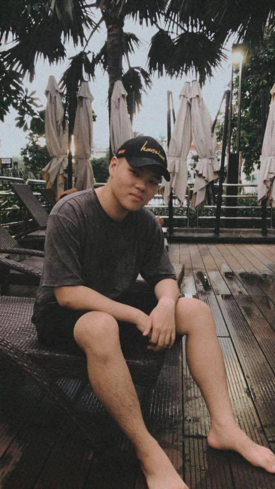

Member 1:
• Name: Le Anh Tuan
• ID: S3836290
• Email: S3836290@rmit.edu.vn
• Facts: Interested in technology and want to learn how to design applications for modern life. Moreover, extremely love cats and cooking.
• IT interest: Impressed by the development of technology and the creativity of each application developed.
• IT experience: Beginner to study and no practical experience
• Team name: Beginner Guys
Member 1 Results : Le Anh Tuan (3836290)


Member 2:

• Name: Chang Min Cheng
• ID: s3824318
• Email: s3824318@rmit.edu.vn
• Facts: I like IT programming, and study front end back end.
• IT interest: My brother is the one who inspired me to follow the IT patch. I said that because anytime I saw him on the computer, his fingers surfed on the keyboard so fast that I couldn't even recognize what he was trying to type. Each line of code he types on the computer makes me wonder what he is going to create with those lines. Suddenly, he shows me that if any spam email or malware wants to enter our PC system, it will immediately remove the harmful material. From that moment, I feel that IT will be my future career where I could develop software that protects others' private information against those hackers who try to steal bank accounts, and customer data. Moreover, I have participated in a robotics coding competition 2 years ago which my team earned second place overall. This powerful experience I gained was really helpful with the major I currently study in Rmit. I have taken one more step closer to become a skillful software developer. Although I still need to put more effort into it, I will try my best.
• IT experience: I am started to study and it all new to myself.
Member 2 Results : Chang Min Cheng (3824318)
The results of an online Myers-Briggs test : My personality type is: Advocate (I like to suggest ideas and give ideas to other people)

The results of an online learning style test : Visual (I observed new knowledge by seeing it and done more practical)

The results of one further online test of your choosing : In studying, I usually a thinker who need to consider things in different angle.

Member 3:

• Name: Huynh Quoc Thinh
• ID: s3820374
• Email: s3820374@rmit.edu.vn
• Facts: I used to study Cardiothoracic Surgeon, but I changed my mind to study IT and I think that I made a right decision.
• IT interest: If memory serves, I started to have a huge love in coding on March 2012. At that time, I was 13; I saw my uncle coding on his computer, and I asked him "What are you doing? It looks so great!!!". He said that he is creating a game for VNG company.
• IT experience: This is my first semester that I work with program.
Member 3 Results : Huynh Quoc Thinh (3820374)
The results of an online Myers-Briggs test : My personality type is: Consul (I am a leader person. It means I have enough abilities to lead a whole group and I can easy to work with people. In my opinion, I think this is true, because I have worked with a lot of people before and we never bumped into any arguments.)

The results of an online learning style test : Visual (I am a visual leaner. It means I can learn best when information is presented in a written language format or in another visual format such as pictures or diagrams.)

The results of one further online test of your choosing : According to Creativity Test, I got 61% in total. I got both complexity and paradox are my strongest point. It said I have enough potential to work with statement and able to carry a large quantities of information or manipulate/manage information.

Member 4:

• Name: Tran Hoang Thien An
• ID: S3594462
• Email: S3594462@rmit.edu.vn
• Facts: Have a natural passion with video games and would love to learn more about how to create a MMORPG game. My dream is become a game developers and language translator.
• IT interest: Unity game maker is one of the most interesting sofware i have ever learned.
• IT experience: Beginner to study and no practical experience
• Team name: Beginner Guys
Member 4 Results : Tran Hoang Thien An (3594462)
Through these 3 tests I could know what are my strength to focus on the suitable part of the project as well as my weakness to avoid or o ask other members who has great ability to work in that section. Moreover with the results of the tests I realize alot about my hidden personality and what field should I improve to be useful in a group


On our assignment 2, there were grouping problems and we had very little time to work on time but we managed to get good results and complete it in a short time. Besides the time we still have trouble communicating because the time to learn is almost not there while we have to work in groups to complete in time, it can be said that it is a big challenge for us. at that time. But then we have good benefits from it like we understand the strengths and weaknesses of each individual and from there is our advantage over this exercise. More specifically, there will be changes in meeting time to work better, the work is done in more detail than the old team is to do individual parts, then combine that leads to the previous group post of we are quite fragmented and that is the obstacle in getting the exercise back in the right direction. We also learned about the most suitable technologies for the project from which we gave specific directions. We have also increased each individual's team time to ensure good work times.
For us, there is a lot in common when it comes to Ideal Work. Examples: what all knowledge members have in common using IT skills such as coding, experience with all programming languages and soft skills such as communication. Thinh chose to work as an embedded software engineer while others chose to work in different fields such as working for Apple, Software Engineering and Game Creation. An ideal job for entertainment is games, which require difficult areas in the IT industry, and Tuan chose to work in Apple's platform-based development. Beside Cheng choose to become a software engineering which I required to study more coding languages as well as understand deeply about the technology. However, although everyone in the group has different directions, all the ideal jobs of the group have some similarities as we all work with IT systems and PC software, jobs. This requires general skills and job experience that can develop during the job.
Thinh section:
Topic: Our project idea is about programming an AI to support family life. Therefore, after carefully considering what our AI could and willing to do, we decided to create an AI that could be used as protection against criminals and threats, control the light and air conditioning systems in order to decrease the wasteful use of energy , and look after the babies. Besides that, we want to introduce to Vietnamese citizens about new technology which they can save as much money as they want if they understand our ideas and want to apply AI into their own house. Our ideas also base on the global warming issues as people continuously waste a lot of energy per second, and the programme that is being created will minimize the impact on the environment.The team looks forward to having a friendly, convenient, and useful system to operate your house efficiently as well as your daily task. Our AI can serve your essential needs and wants while you are having a headache because of work pressure. Consequently, our AI definitely guarantees to help you have a happy life in your lovely home. Furthermore, it is important for you to give us some feedback on our idea and we can generate your advice into our product to make it look perfect.
Motivation:If someone asks me about where we get the idea and why we are passionate about AI, our team will always say that we want to make human life more easy and secure. To be honest, this modern world pushes people to their limit especially at work, they don’t have time to take care of their family members as well as their lovely house. Furthermore, our team want residents to be safe from any kind of threats such as electric shock, sexual harassment, and murderer. Besides that, we also consider a solution to reduce the amount of heat that has been released by the air conditioners into the environment. If this is successfully built, the society must give a great applause to us because we can decrease the heat that causes global warming to become seriously dangerous, the alarm system about strangers entering the house, and look after kids from getting electric shock.
Landscape: From the research about the market of this type of product, there are some companies that already did the similar product and they have used the same technologies like our group project. Most smart home companies are from the US such as Google LLC, Amazon, ABB ltd from Switzerland, LG from South Korea. Moreover, ZigBee, Z-Wave, Lutron, and Wink are needed in designing a smart house. I found that there are two huge advantages that smart house companies currently consider on IOT and program working as same as a computer, in other words it could fall and attack by hackers. Because of the reasons that have been mentioned, we strongly believe that the new AI can successfully overcome the problems that the old one suffer from and we the next generation will observe the latest technology that give us the possibility to make most of the benefits for the nation, our beloved country Vietnam.
Our project was all about applying AI into human daily life. Resulting in our aim will focus on three main aspects of the project that we will present to our potential investors as well as clients. The three vital categories our team are looking forward to are health care, convenience, and safety. These aspects were generally from what we observe in today's world and doing some of the research on the internet about dangerous problems people usually face in their life.
Firstly, house safety is the number one consideration of our project and we don’t want anyone to get hurt or be kidnapped by the criminals. Moreover, there has been serious concern due to the fact that the rate of crime continuously rises without stopping. There are cases in which the kidnapper breaks through into the house and kidnaps the kid without the notice of anyone. Therefore, our AI can provide the safest technology which requires strangers to ask for the owner's permission in order to access the house or if they try to, the alarm system will ring to terrify the criminal.
Secondly, we have an automatic air conditioning system that can detect the people's temperature and it will adjust the temperature to fit with the current body heat. This technology provides the foremost solution for citizens to stop getting heat shock and a comfortable feeling after the owner gets home. It happens that there are many situations where people get stroke after getting heat shock and we are the first team to have the idea of taking care of personal health. We guarantee to support each individual as a friendly house members assistant and there is a promise of providing the best health care service besides the hospital.
Lastly, we also care about the environment and the energy saving issues. As global warming was the top consideration of all the governments in the world. Therefore, more and more citizens have overused the air conditioning that will release a lot of heat into the air and that is one of the reasons why global warming still increases overtime. Our AI can sense if anyone is in the house or not, if not the lighting system there will turn off to save energy. For instance someone is in a hurry to go to work and they forget to turn off the lights and TV, the AI will do that for you without any need of remote control. It is believed that we can reduce as much energy as we can to make our owners pay less monthly bills and to become a part of energy saving.
As for my team's idea, we have developed the convenience of future smart homes and specifically suit the current situation in Vietnam. And we have been moving towards AI technology, which is suitable for the smart house system and we plan to develop it in Vietnam first and if it is successfully operated, we can ask the Make a contribution so that we can publicize the technology world. On the other hand, we encountered some difficulties in making this project a reality. The members' knowledge is limited in this area as well as the current technology does not allow us to realize our projects. We have divided the specifics of this project and here are the details of each individual in our team about this project.
On the one hand, the concept part of the project, which everyone on the team thought it would be difficult because the knowledge in this area seemed to be our biggest challenge. We discussed a lot about how to get practical ideas for the smart home project. Our original intention was just a smart home that could be controlled by devices as far away as a phone. But things changed as we learned more about other serious issues such as today's worldwide kidnapping situation. We have searched the above information through reputable journalists and this is one of them
We have already embarked on a search to develop the project. We have divided into 3 main jobs that are to learn about technologies to be able to build a smart home. For instance, we looked at AI technology. Moreover, we also learned about Azure Machine Learning's specific features. It is the encompassing of services and functions related to AI sub-fabrication. Some of our project's AI security systems and related industry features.
The second job is to try to figure out how to apply those technologies without our idea of "reminder" to work smoothly. Furthermore, we have already tested these technologies, the testing has proceeded into four phases of virtual testing, prototype testing, real field testing, and final testing. In the first phase, we need to test the software online to see if all functions are working correctly, we will use the code checking software to run all the code we created. for AI and debug any minor or core problems. The next stage, we create a prototype of the product with a simple modem and try to connect it to our on-premises Internet modem, try using the app and control the house with the prototype, AI will be used at 4 members' homes. of the group for a month to realize how it works differently from another Internet access. The next step, we will try the volunteer AI at home for at least 1 month to see what the problem could be and how to improve the functions, the volunteer will be gathered from a post on the website. and give them the opportunity to test AI for the first month and 3 months for free to receive gifts, the project needs to get as much feedback as possible so the team will try to find at least 20 AI users at their facility. The final test is the product sales period for the first year, so if anyone tries to buy an AI product in its first year on the market, the team will give them the first 10 days free to use the function. demo function of the device, in the first 10 days if any problem occurs, we will give the customer a new one and make sure the new one works as their needs. We will discuss the results of any test phase and compare all 4 stages with each other, so if the first stage the machine works normally but it is different from the second stage we there will be a discussion and try to figure out the cause of the difference and when should we fix the problems, until all stages release the same or better results, We will confirm that this AI is ready for sale.
And the third job is to learn about people's information as well as data to be able to give out specific figures for the adjustment. For instance, we opened a survey of people's opinions about the disadvantages of existing smart homes in smart homes today. And the result that we get the most is the lack of specific calculation of the current smart home technology and not suitable for the life of Vietnamese people. Especially, they also highlight their concern about current child abduction. Since most people use smart houses because they are too busy with work and their time at home is very little, ensuring the safety of their children is always the biggest obstacle. That is also the main reason why we want to create AI in our project. More specifically for this, we promise to solve these problems effectively if the client allows us to be able to track the location on a watch that helps AI communicate and sense threats. For example, a criminal wants to commit a crime with a child, so they have to find a quiet place to harass the victim. On the contrary, our AI can recognize the owner is in danger and it will continuously send an alarm with a noisy sound that makes criminals know they should run away, not stay there. Besides, we also have a smart air-conditioning system setup to avoid heat shock when walking out of the house. Because the temperature in Vietnam is so hot, getting out of the house in the middle of midday is a heat shock.
On the other hand, besides the team's ideas and technologies, it is undeniable that we are having big trouble with the experience and understanding of AI and the minimum requirements to make our project. become reality. For instance, when doing the research and development of the project we all based on the information already on the internet and selected it for the best fit but we cannot test it on our product. However, if we have to hand this project over at the end of the semester to a new team to complete the job, we would highly expect that they will start testing them with which technology first for a practical perspective.
In our project, the specific determination for each position includes 4 main positions that are a data analyst, Technical Designer, Information Security Officer and Programmer:
Data analyst: A data analyst is responsible for collecting information with a clear analysis that can be applied directly to the project. For instance, they will be the ones to see the right temperature for the air conditioner and the outside temperature at the same time to minimize thermal shock. Furthermore, they must also be technologically savvy to be able to understand what data machines cannot compute on their own to have a solution to that.
Technical Designer: For this position need to concretize the basic design after the approved work construction investment project in order to fully demonstrate the solutions, specifications and materials used in accordance with technical standards and regulations. application, as the basis for developing construction drawing design. For instance, they will have to design it to suit each house to ensure all features of the project are technically correct and get the best performance.
Information Security Officer: in this position is critical to making the project safe or not. They will have to completely eliminate hazards that could directly affect the project and the users of this product. For instance, at this time there are many cases where the camera is stolen and caused great damage to the user and the company of the product. Information protection will be of primary concern as it will be very harmful if the project has poor security.
Programmer: In this position, experience and proficiency in programming are required. They can apply the project's requirements based on their experience to program them correctly and successfully correct them. For instance, they need to be experienced and competent so that when the project features can be programmed quickly to test it as soon as possible.
The project is expecting to create a full functional AI to be remotely controlled and the AI will be commanded or customized by the house owner. However, with the limitation of technology in recent years, creating such an AI is challenging and requires lots of criteria which are quite impossible to obtain now. So our expectation on this project is creating an AI to remotely control by client through a mobile or pc app, the owner now has a chance to control the AI by selecting function show on the app by hands so it is not possible to control the AI by voice recognition or client’s mind. Moreover it is only control the electric devices which are already plugged in although there are tons of non electric devices such as doors, windows or even gas stove . The AI can not distinguish between animals and people and it can only store information rather than using that information to recognize the member of the family or the robbery. The only function is alerting someone is stepping in the house.
The first software which is extremely essential for creating AI is Azure Machine Learning, this kind of software contains services such as AML workbench, AML experimentation Service, AML model management, MMLSpark ( Microsoft machine learning libraries for apache spark), visual studio used for AI coded. The tools are easily processed for beginners and all the data will be privately secured by Microsoft Azure cloud, some services of the tools are quite familiar with members of the team such as visual studio which we had learned before. However the services used for creating such an AI is still difficult to process as well as approach advanced functions but this is one of the most basic tools for AI so all of the members would be able to get the insight features of the tool. The second software is used to store the data for second used or backup files called Box Container 3.6, this type of software is quite difficult to members of the team but it is so far the best tool for securing the data. The last software is a mobile or Pc application called Reminder which will be created for the house owner to receive alerts from the main AI, this software will be created on the python or visual studio platform by members of the team. The second and third software do not need a license to access because the team could use the cracked version but for the first one which is an Microsoft software so it is better to buy a key to use all the advanced features. About hardware the only thing we need is a modem to connect the AI with the internet of the house then the AI will take control over the whole place, the modem would look like an Internet modem so it is not so difficult for the team to create it.
The test will happen in 4 stages : virtual testing, prototype testing, real field testing, final test. In the first stage we need to test the software online to know whether all the functions work correctly, we would use the code testing software to run all the code we made for the AI and debug any minor or core issues. Next stage we make a prototype of the product with a simple modem and try to connect it with our Internet modem at our facility, try to use the app and control the house with the prototype, the AI will be used at 4 houses of 4 members of the team in 1 month to realize how it work differently in other Internet access. Next step, we would try the AI at volunteer’s houses in at least 1 month to see what could be the problems so far and how to improve the functions, the volunteer will be collected from a post in our main website and give them a chance to test the AI in the first month and 3 free month for gift, the project need to get as much feedback as possible so the team will try to find at least 20 people to use the AI at their property. The final test is a period of selling product in the first year so if any one try to purchase the AI product in the first year in the market the team would give them a free first 10 day to use the demo function of the device, in the first 10 day if any problem happen we would the client a brand new one and ensure the new one is working correctly as their need. We would discuss the result of any stage of testing and compare all 4 stages with each other, so if the first stage the machine work correctly but it is different with the second stage we would have a discourse and try to figure what cause the different and when should we fix the issues, until all the stage release the same result or better result we would confirm that this AI is ready for selling.
The technologies are not perfectly; everything is always having the bugs in their projects and we are not an exception. There are a few risks that we really concerned about which are our AI is going to be hacked and controlled by attackers. Due to the risks, the personal space of customers will be invaded and the safety of the house will be lost. According to the one of the famous Vietnamese news, there are some cameras of the house of a woman got hacked by attackers and they leaked all the videos of the house’s owner activities on the website. Moreover, we also concerned about the alternative power supply. For instance, if the house lost its electricity, the AI will be shutdown as well. Therefore, we think that it is hard to find another power supply that provide enough power for the AI and the house.
Because of teamwork, communication is the minimum requirement for the best team development. Our team tried to arrange a time to meet face-to-face to be able to discuss details as well as make plans for weekly plans. We made appointments and met every Monday to have a meeting for at least 30 minutes so we could talk about the project while checking each week's assigned work progress. Besides meeting face to face, we still communicate directly with each other on the Facebook group every day if someone has any good questions as well as helping each other find information. Since everyone will have their own work, we tried to meet once a week but kept in touch. That helps us to control the quality as well as the duration of the work. However, we all understand that not responding to communications will have a huge impact on the project so we communicated with each other regularly and on time.
Our group project idea is that we will create an AI that can control everything in house; and we can say that it is like “J.A.R.V.I.S” from Ironman. Nonetheless, to make this project embark on; it required a lot of crucial positions and four of those positions that we considered important which are marketing, engineering, coder and security.
Marketing: We would say that marketing is an important role and we do have some reasons to support for our ideas. To start with, marketing’s jobs are delivering and explaining for customers about our group’s product and why they should know or invest in this product. For example, if there are “low-tech” customers who heard about us and really wanted to know, marketing team will do their works by explaining clearly everything for customers. Therefore, the basic requirement for marketing team is a “Good Communication” skill; then, they need to know about “IT fields” (enough that can explain for customers), “an ability to understand what customers need” and the most important is “Team work”.
Electrical Engineer: For this position, we required a person who has more than 3 years’ experience working on this field. To be specific, electrical engineer is included design power delivery systems for efficient and reliable operations; maintain and secure power systems. The main reason is that we want to make sure that everything can synchronize without causing any negative problems. If one of parts in the whole systems conflict with another electric device, it will create a huge damage for not only experience of customers, but also our brand. Therefore, providing a safety systems and experiences for customers is our priority.
Programmer: This position is understandable because we cannot do anything without coders. However, we have the strictly requirements for this position. First, we want to hire a person who has a strong skill on all programming languages and has more than 4 years working this field. Second, they need to pass a test which is called Logic Test from us. The main reason we created this test is that we want that all programmers work for our project need to have a deeply critical thinking. In addition, if we hire the person who has only 1 year and they did not get a good score from our test, it will be really time-consuming and they will not know how to organize stuff.
Security: For this position, we do also need a strictly requirements as same as programmer. As we mentioned our risks above, so we want the person who has a meticulous characteristic and can work well in team. In addition, security will work with programmer and electrical engineer; therefore, they will need to get along with each position.
Chang Min Cheng (s3824318):
This is my feedback for all the members:
Thinh: Thinh is an active person in a group, he also a good listener and he is the one who always completes before the team deadline. In meetings, Thinh makes a lot of funny jokes that minimize the pressure of the group meeting a lot, but sometimes in discussion about ideas Thinh seems shy and sometimes Thinh is late for the team submission.
Tuan: Tuan is a wonderful leader of my team, and he shows his leadership strongly in our team. Tuan helps me with improving my idea about the AI, he also supports the team website layout and the way that Tuan decorates every single line and sentence is fascinating. In addition, in the face-to-face meeting Tuan carefully explains what we are going to do in detail and he tracks our progress continuously which guarantees us to meet the team due date. In contrast, I think he has a lot of pressure and he rarely says about where his difficulties are which I suggest Tuan shares with us so we can help him right away.
An: At first, I rarely see An in the team meeting because he is too busy with other majors. In contrast, An still comes to school to meet the team members whenever we need to have a group discussion. Furthermore, he finishes his work in the right amount of time which I really appreciate. One recommendation is that An should ask more questions and try to improve the time management skill.
Cheng: Personally, I have improved my communication skill throughout the assignment 3, and I am confident to express my own idea if there are team meetings. Moreover, I also help my team members such as An when he asks me about adding his Git account in Atom. On the other hand, I am usually late for the team deadline which really disturbs the other members. Obviously I should manage my time wisely and prepare well for my part so that my members don’t need to wait for me.
Huynh Quoc Thinh (s3820374):
This is my feedback for all members:
Thinh: About myself, I think that I am a person who gives all members an energy and boost them to do their best. I always give the best solutions for my teammate when they were stuck. However, I could not able to manage the time; so, I submitted my individual parts late sometimes. Moreover, I also barely to ask my teammate when I got stuck because I felt embarrashed; and it was also a reason that I submitted late my parts. To me, I think I need to learn how to manage the time and submit the work on time.
Tuan: I can say that he is a person who got stressed the most. He spent a few days to carefully read the rubric and shared the individual works for all members fairly. I also realized that me, Cheng and An were missed 1 part of our individual work, and Tuan did everything by him self. If you ask, he is doing a pretty job as a leader. However, I told all members that they need to "pull" and edit before they "push" their works on repository; but Tuan forgot to do that. Therefore, he accidentally created a conflict for all members and we had to do everything again. I would suggest that he should carefully think before he does something.
An: An has a totally different point of views with another members. Therefore, he is always suggest the daring ideas, but it is always work perfectly. I got impressed by the way he completed his works. For example, Tuan assigned works for him on that day and he completed everything on the next day. However, I sometimes got pissed when we set up the meetings but he always show up late and it is really hard to contact him. It would be great If he can manage his time and come to the meetings on time.
Chen: Chen is a bit quiet but he did a good jobs when he gave all needed information about the project ideas. However, he forgot his individual works such as the "overview" part and when Tuan asked about that part; Chen just said that he did not know that he needs to do that part.
Tran Hoang Thien An (s359462):
I have some feedback for each members of the team:
An: About myself, as a begginer in IT and technology I have really difficult time to get used to the sofware or the frame of the assignment but with a lot of helps from my teamates I got better I learned pretty much from lectuture and friends to enhance my abilities and also accomplish the assignment within range and knowledge. However I still need to keep on obsorbing more knowledge to be able to help others better than just completed my own jobs.
Tuan: About Tuan who is assigned as a team leader, at first I though he would receive a lot of pressure from the team and hard to control the amount of works of team's members but he really good at leading people, he divided jobs for everyone, helps members as much as possible. However I personally think he is a little bit aggressive and strict sometime and that influences his abilities and his decision, hopefully he could improve about that area.
Thinh: Thinh is quite nervous when facing others especially when we have a meeting, I rarely saw him asking a question about his parts but he dealing extremely great with his section of the Project, I actualy quite confused about his ability because He can accomplish his parts without any support.
Cheng: Cheng is kind of introvert person, he rarely speaks with others, at the first sight I though he would not be able to communicate with the team because he come from Chinese family, after finish assignment 2 with him I understood pretty much about his personaly and tried to ask him some question to get to know him more. I personally think if he could improve his communication skill he should be better to work with others.
Le Anh Tuan (s3836290):
Here is my feedback for each of the team members:
Tuan: About myself is personally assigned to be the team leader and that gives me a lot of responsibility and has to help everyone on the team get things done in a common direction. I myself tried to finish the job to the best, but besides that I still had many shortcomings in the allocation of work time which caused some trouble for the team. I will try to fix that for better teamwork
Thinh: Thinh is very good at giving good suggestions for the job and a lot of contributions when working. Besides, he is also a person who helps people with their jobs to help people do more things. However, he is sometimes late for submission and makes many small mistakes in writing ideas. Thinh is a very enthusiastic person and he should be more careful with his minor mistakes in teamwork later
Cheng: Cheng is quite quiet and gives little idea even though the team idea is based on his own project. However, he is a very punctual person and always does his part well. Cheng should open up to everyone in the group to be able to help the group be better.
An: An is someone who has many different points from his team members because he has his own work to be done every day, so the time he meets and works has not really met. However, he also tried very hard to finish his part seriously and on time. An should arrange a time for work and teamwork better to ensure better working time.
Individual Part:
Chang Min Cheng (s3824318):
When it comes to what I have done in group 7, I strongly believe this is when I show my powerful responsibility with the project idea because at first I don’t meet with others so our performance is not as good as the current state. During the state of finishing my task, I did improve my communication skill in communicating with my team members and I have pushed myself to start the conversation in the group meeting. Moreover, I may have struggled with the Atom and the Github at the beginning when I tried to use it, but I figured out the way to push and clone so that I have got over it. Besides that, I also use the skills that I learn from Github to support my other teammate to push their work into the same place as our assignment. In the last assignment, my leader gave me the overview and plan about the AI that we plan to do and I am really proud that I could freely write about robots and how can me and our team make that program. I want to boost myself more and more in the future so I can make this project idea become realistic.
Huynh Quoc Thinh (s3820374):
In the final assignment, I think that all members did a great job; due to the fact that everyone completed their works on time. Furthermore, I would say that we all have learnt our mistakes from assignment 2. However, the first time that our group was formed, I did not expect that we will work well because we all having problems with GitHub, Atom, ideas, etc; but I think that I am totally wrong. To be specific, I always try my best to give ideas to Chen and An, so that they can work on their project ideas, help all members fix their issues, shared tips and tricks to work on GitHub more efficiently. In addition, I have the skills to work on GitHub; therefore, I helped our groups to save time and that's also the main reason why we completed everything on time. Moreover, I made a Timeframe and it is also known as a planner. I carefully typed out what members need to do in the future to come out with the best products without any issues. However, one of the best things that I made was that I came to meet my uncle and got some ideas for our group project, and I hope it will work well.
Tran Hoang Thien An (s3594462):
In this assignment, I really think we all did our best to accomplish the project on time, everyone already know each other strengths and weaknesses from the previous assignment that's why this time they perfom alot better. Any single member researched on their parts and tried to finish them before helping as well as supporting others. In addition, I have learned tons of knowledge about coding, decorating the web, manage my time and teamwork skills I also learned a lot from my teamates. At the first time joining the team I would not expect we working well with each other because everyone is kind of having so much different personality but after working with each other in assignment 2 and 3 we actually break that barrier and become such a strong team to released the best result for the project.
Le Anh Tuan(s3836290):
As for my personal feelings about my contributions to the group this time, I have completely tried and helped everyone in the group. Specifically, I am a leader and I have tried to learn and read the requirements of the post so that I can distribute the work according to what I think is most suitable such as learning about the team project part to divide the work. Cheng and An probably know the specifics of their part to do. Moreover, I am also the person responsible for the layout of the HTML section as well as giving suggestions for each part so that all members of the team can understand and make it easier. Edit and push individual edits on Github and background design in group posts. I also help Thinh in resizing the image in the Time frame. Besides, throughout the course of my work I have been trying to help people with assignment questions and as the organizer of the weekly group meetings. For instance, we meet every first Monday of the week to discuss and comment. In short, I may have made mistakes in the adjustment and timing is not really right, but I tried to do what I can to help the team get the best results.
Group part:
Tuan: At this 3-time Assignment, I am very satisfied with the teamwork of all members. Everyone has learned from assignment 2 and have seen positive changes this time. Besides the unavoidable mistakes, I myself was very surprised that everyone joined hands to find ideas and from there gave good ideas for the project. Moreover, I learned from my team about how to find information and co-formulated ideas in the right way at the right time. Last but not least, I personally see myself and everyone on the team doing the job in the best way and everyone tried to get the best results.
Thinh:This is the final assignment of us and I feel really confident about this. Each member of the team gave the feedback for others from the last assignment and we all know what we need to do on the final. Due to the fact that all members worked efficiently even though they made some mistakes. We were sometimes misunderstood about others; however, after going through that time, we had understood others and we had completed the works on time and perfect in my opinion.
Cheng: The final assignment is where we put our total effort into the project. Our project cannot be made into a prototype, but we understand about the technology and who has made it already which we base it on to improve it. All of our team members contribute to the last assignment, they are serious and responsible for the part they are incharge. Moreover, anyone who faces difficulties in this last stage will get help straight away from the team leader or anyone who has a solution to solve the problems. Our weaknesses have been improving and we are now closely connected, understanding each other well. We believe that our project can bring the AI industry to a whole new level.
Thien An: In this assignment everyone is working extremely well with plenty of researching and finding that made the project become one the best so far. Any single member of the team learned from last mistakes and tried to improve their weaknesses before working on this assignment that's one of the reason made the performance become unique and great. The team meet up more and understand each other also willing to support and explain whatever issues, I believe this time the whole team satisfied with the final results.